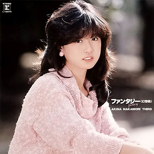

录音室专辑：第3张
发行年份：1983年
发行日期：3月23日
Side 1
| 歌名 | 作词 | 作曲 | 编曲 |
|---|---|---|---|
| 明菜から……。 | 萩田光雄 | ||
| 瑠璃色の夜へ | 来生えつこ | 佐瀬寿一 | 萩田光雄 |
| アバンチュール | 岡崎舞子 | 森一海 | 萩田光雄 |
| にぎわいの季節へ | 大津あきら | 木森敏之 | 萩田光雄 |
| 傷だらけのラブ | 伊達歩 | 芳野藤丸 | 萩田光雄 |
Side 2
| 歌名 | 作词 | 作曲 | 编曲 |
|---|---|---|---|
| 目をとじて小旅行 | 篠塚満由美 | 茂村泰彦 | 萩田光雄 |
| セカンド・ラブ | 来生えつこ | 来生たかお | 萩田光雄 |
| 思春期 | 売野雅勇 | 芹澤廣明 | 萩田光雄 |
| More もっと恋して | 伊達歩 | 米倉良広 | 萩田光雄 |
| アイツはジョーク | 中里綴 | 福島邦子 | 萩田光雄 |
2022年版增加
| 歌名 | 作词 | 作曲 | 编曲 |
|---|---|---|---|
| 鏡の中のJ | 三浦徳子 | 佐藤健 | 萩田光雄 |
首发规格：黑胶 LP: L-12570，卡带 CT: LKF-8070
唱片公司：Reprise Records，Warner Pioneer
排行榜：Oricon公信榜LP周榜第1位（连续4周），1983年度专辑榜第4位
再发行：
1983年6月25日 - SD: SDM-15007，CD: 35XL-1
1985年6月25日 - CD: 32XL-84
1991年8月17日 - CD: WPCL-412
1996年4月25日 - CD: WPC6-8184
2006年6月21日 - CD、数码下载: WPCL-10278
2012年8月22日 - SACD/CD: WPCL-11136
2014年1月29日 - CD: WPCL-11724
2022年9月21日 - 2CD：WPCL-13414~5